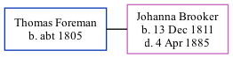

Thomas Foreman c1805 -
[ Home ] | [ Calendar ] | [ Surnames Index ] | [ Family History ]Thomas Foreman, the husband of Johanna Brooker (the 3 times great-grandmother of Nigel Horne), was born in Minster, Thanet, Kent, England <i>c.</i> 1805<span class="citation">1,2,3</span>. He married Johanna (a pauper char woman) in St Lawrence, Thanet, Kent, England on Jun 22, 1856<span class="citation">4</span>.</p><p>Throughout his life, he lived in St Lawrence in 1861<span class="citation">1</span>, in 1871<span class="citation">2</span> and in 1881<span class="citation">3</span>.
Citations
- 1861 England Census Online publication - Provo, UT, USA: The Generations Network, Inc., 2005.Original data - Census Returns of England and Wales, 1861. Kew, Surrey, England: The National Archives of the UK (TNA): Public Record Office (PRO), 1861. Data imaged from the National
- 1871 England Census Online publication - Provo, UT, USA: The Generations Network, Inc., 2004.Original data - Census Returns of England and Wales, 1871. Kew, Surrey, England: The National Archives of the UK (TNA): Public Record Office (PRO), 1871. Data imaged from the National
- 1881 England Census Online publication - Provo, UT, USA: The Generations Network, Inc., 2004. 1881 British Isles Census Index provided by The Church of Jesus Christ of Latter-day Saints © Copyright 1999 Intellectual Reserve, Inc. All rights reserved. All use is subject to the
- England & Wales, FreeBMD Marriage Index: 1837-1915 Online publication - Provo, UT, USA: The Generations Network, Inc., 2006.Original data - General Register Office. England and Wales Civil Registration Indexes. London, England: General Register Office. © Crown copyright. Published by permission of the Cont
Media
Thomas Foreman - Johanna Edwards - marriage record

Family Tree
Generated by Ged2Site. Last updated on Jul 20, 2025